注意点
上記の記事にもありますが、iPhoneやAndroidにVRアプリを入れるなら、 Unityインストール時のモジュール選択画面で iOS Build Support や
Android Build Support を選択しておいてください(一応後からでもつけることはできる)
Macについて、そあくんの自己満で画像説明を補足しときます
まずここから始めよう
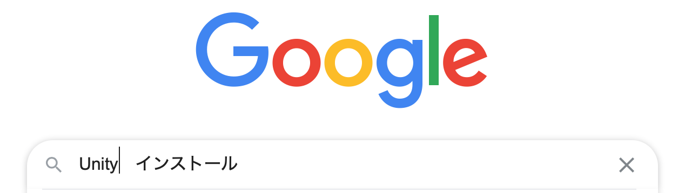そしたらこちらをクリック
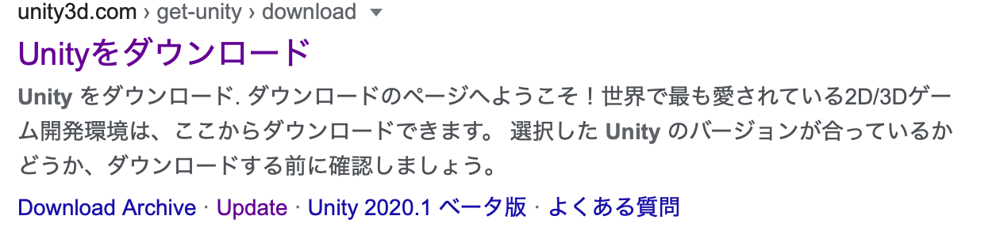んでこうなるから、「Unity hubをダウンロード」をクリックしよう
すると、ダウンロードが始まります
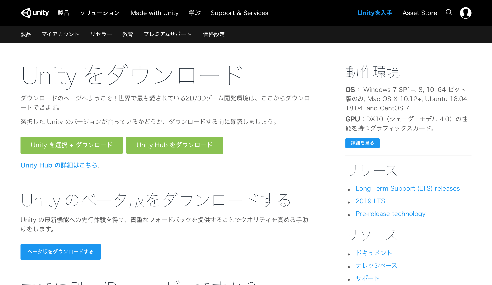無事ダウンロードが終わった暁に、ダウンロードしたやつを開くと、まずこんな感じになります
ちゃんと「agree」してね。じゃないと一生前に進めません
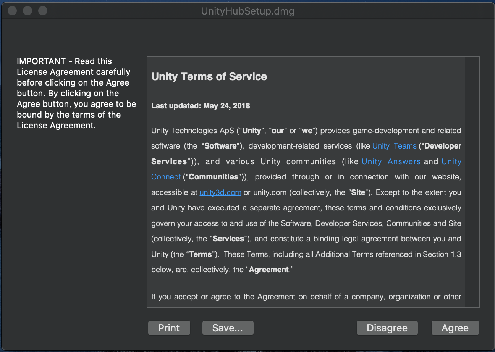んで気がつけば、こんな画面になってます
そしたら左のアイコン的なやつをダブルクリック！画像が読み込めてないよきは、アプリケーションマークになってるけど気にせずダブルクリック
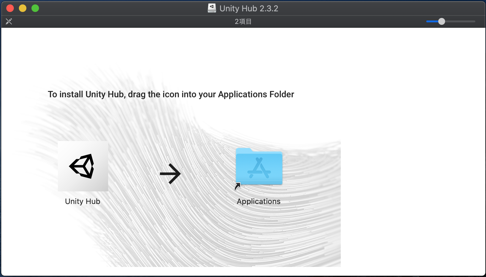検証とか諸々Macがやってくれて、こんな画面になります
したら、インストールをクリックしよう
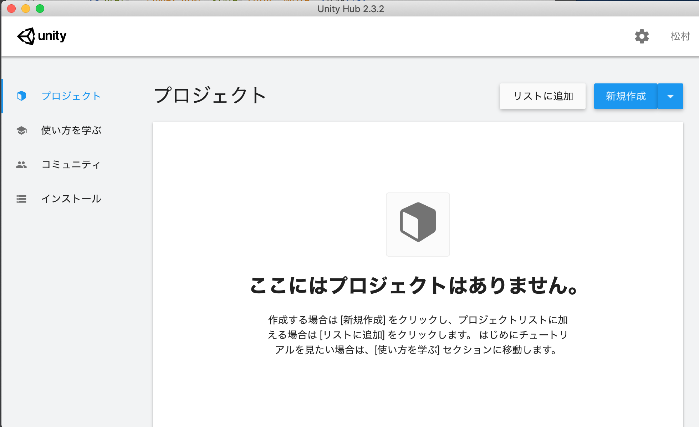 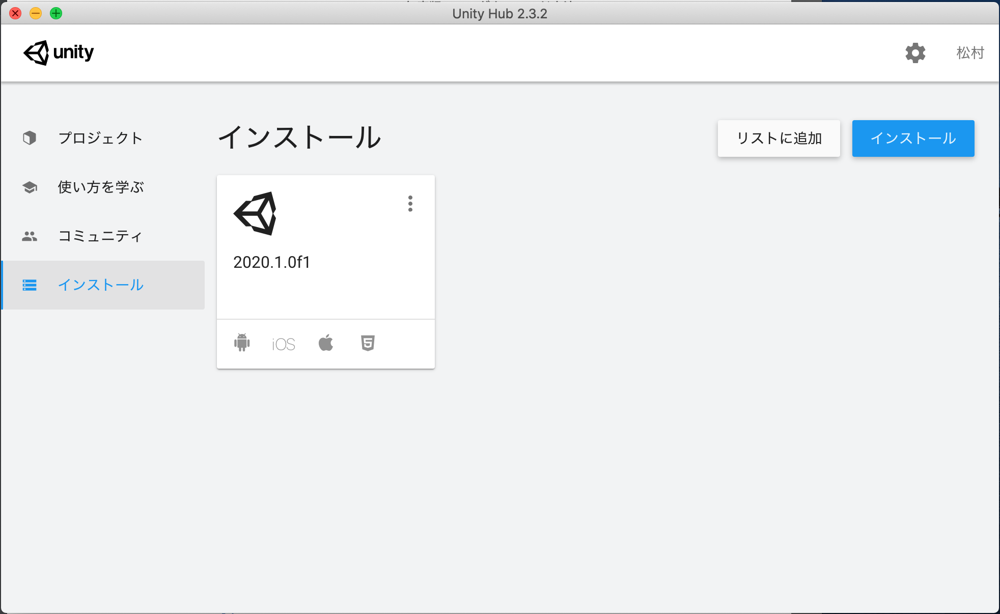僕はもうインストールしてるけど本当は何もありません
そしたら、右上のインストールを押してみよう
こうなる
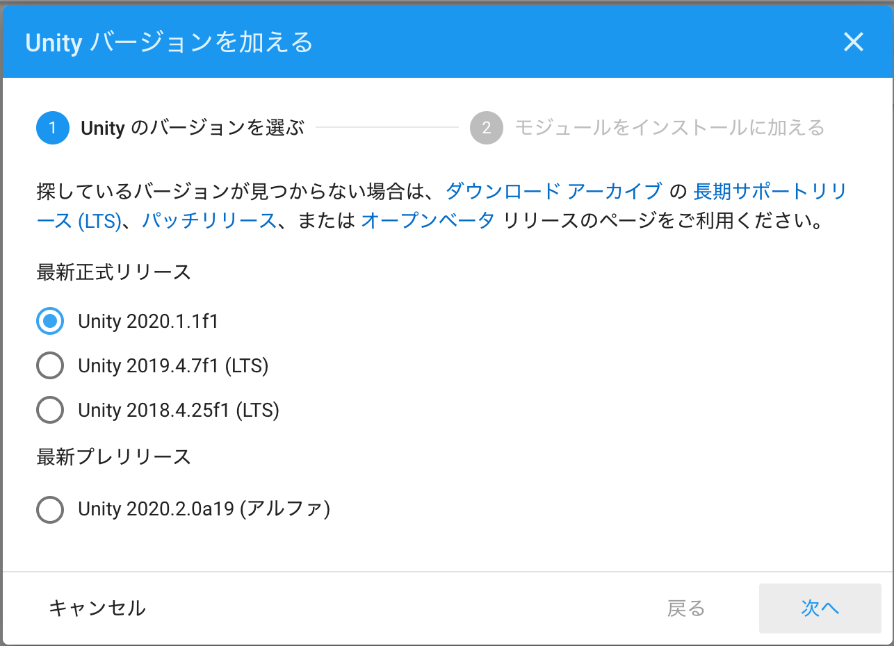まあ一番上の2020をインストールしとけば問題なしでしょう,したら、「次へ」
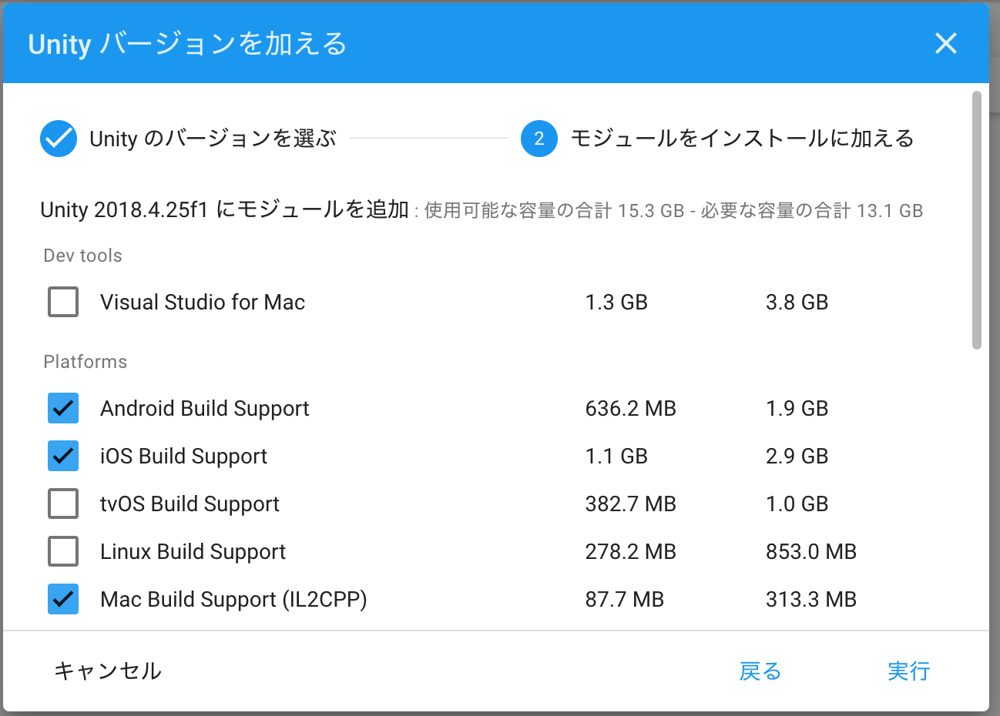ここで重要なのは、Androidとios,Mac or windows or Linux（自分のパソコンに合わせて）あと、Documentationと日本語にチェックしよう！まあここは好みがあるからね。追加したければいっぱいどうぞ
インストールに結構かかるけどガマン！終わったら、「プロジェクト」に移動してね
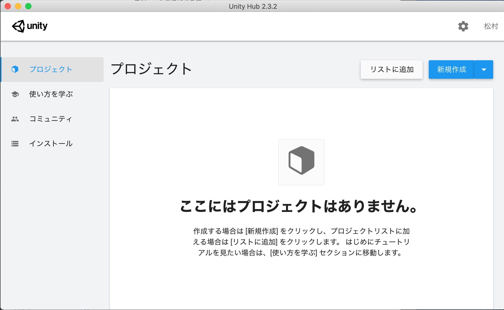そしたら、「新規作成」をクリック
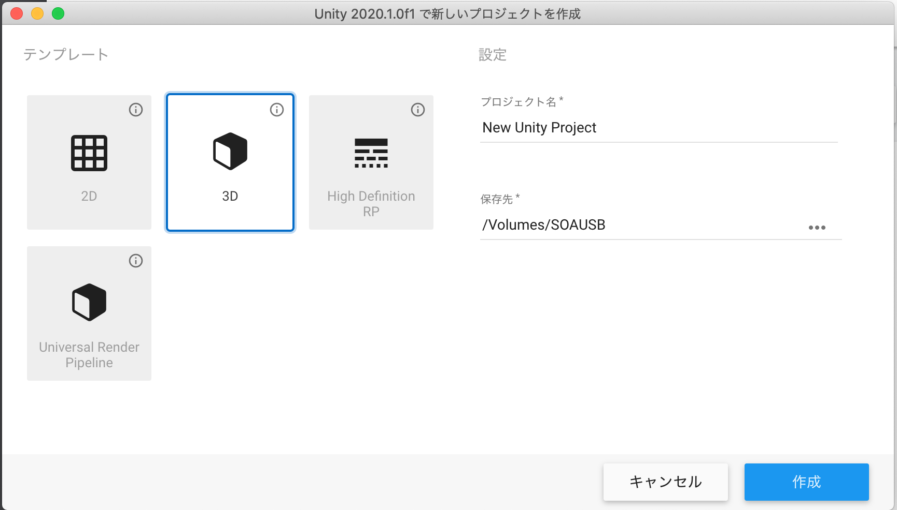名前と、保存先は自由に決めて、作品を作っていってください！
導入はここまでです！
モジュールを追加する時
- Unity Hub内のインストール画面でモジュールを追加するUnityの︙をクリック
モジュールを加えるをクリックし、追加する物を選択してから実行を押す